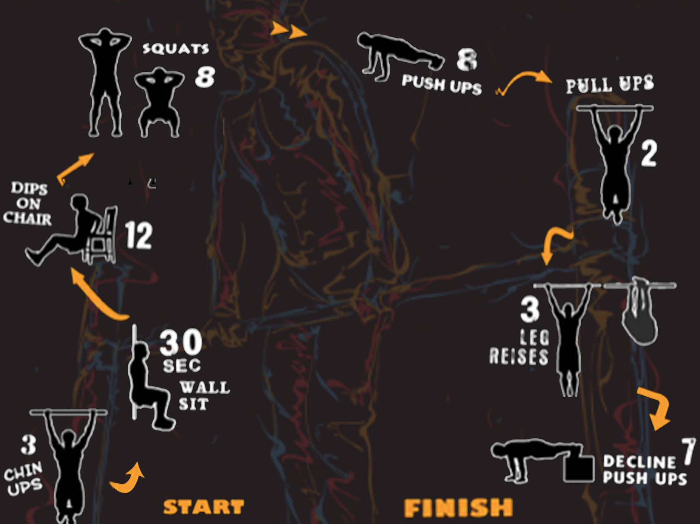
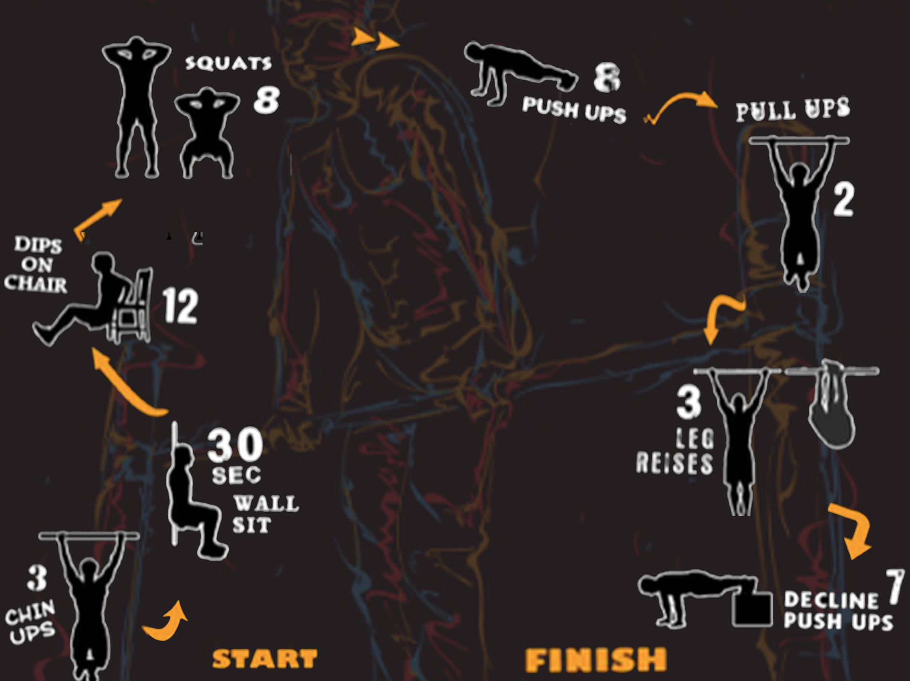

Infografisk design af calisthenics program trin for trin
Optimer din træning med Calisthenics.
For at optimere din træning i de udendørs fitnessparker kan vi anbefale en kendt træningsform som Calisthenics.
Calisthenics er en træningsform som fokuserer på løft af egenvægt. Ved hjælp af statiske, stående og gribende øvelser
kan man både opbygge muskler og udfordre sig selv og sin træning.
Træningsprogrammet kan vi anbefale hvis man er ny og gerne vil i gang med
denne træningsform. Øvelserne kan give flotte resultater og fordi man kun bruger sin egen
kropsvægt, er der en mindre risiko for skader.
Kroppen lider ikke den samme overlast som kan forekomme med tunge håndvægte. Samtidig giver
øvelserne en fantastisk kontrol og balance idet man arbejder i statiske, stående og hængende tilstande.
Prøv det !